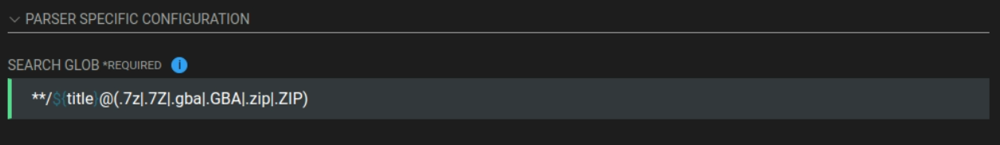

First Steps
First Steps Table of Contents
The Basics
$HOME or ~ refer to your home directory. On a typical linux distro, the full path will be \$HOME/\$USER. On a Steam Deck, the full path will be /home/deck. When navigating using the file manager, the file manager may not be display the username visually in the full file path.
Directories with a . in front of their name, like $HOME/.steam, are hidden by default. In Dolphin (a file manager), click the hamburger menu in the top right and toggle on Show Hidden Files. The setting may vary depending on which file manager you are using.
$HOME/Applications refers to the Applications folder in your home directory. On a typical linux distro, the full path will be \$HOME/\$USER/Applications. On a Steam Deck, the full path will be /home/deck/Applications. When navigating using the file manager, the file manager may not display the username visually in the full file path. The Applications folder is not created by default. If you have not created one already, do so before following the steps in this section.
How to Set up a Basic Emulation Directory
Info
This page assumes you will use the paths in the section below. You are not required to use these paths. However, it is recommended you keep the folder names for consistency across the sections on this page. For example, if you are using an external storage device, it is recommended you use something like /run/media/deck/Emulation as your base folder.
- In the
$HOMEfolder, create aGamesfolder if one does not exist - In the
$HOME/Gamesfolder, create anEmulationfolder - In the
$HOME/Games/Emulationfolder, create the following folders:
*BIOS
*ROMs
*Saves- In the
Savesfolder, create aStatesfolder Screenshots
- In the
- The final directory should look like the following image:
{kind=link}
How to Set up ES-DE and the ROM Folders
- Open the ES-DE website, https://es-de.org/#Download
- If on a Linux desktop, click the
Linux x64 AppImagebutton. If on a Steam Deck, click theSteam Deck AppImage - Move the downloaded AppImage to
$HOME/Applications. - Right click the AppImage, Right click the application or file in question, click
Properties, clickPermissions, checkIs Executable. - (Optional) For easier maintenance, rename the AppImage to
ES-DE.AppImage - Double click the AppImage to run ES-DE
- On the ES-DE onboarding screen, click
CHANGEand update the path to$HOME/Games/Emulation/ROMs - Click the checkmark to confirm the path
- On the onboarding screen, click
CREATEto allow ES-DE to create the ROM folders in$HOME/Games/Emulation/ROMs - Once ES-DE has created the folders, click
QUIT - ES-DE and the ROM folders are now configured
{kind=link}
{kind=link}
How to Set Up and Configure RetroArch
How to Install RetroArch
- Open your distro's software manager.
- On SteamOS and distros with KDE, you may use Discover, a "store" to install and manage Flatpaks.
- Search for "RetroArch" and click "Install" on the top right of the software page For RetroArch
- Open Konsole or a terminal of your choice
- Type the following two lines, one at a time, and press enter after each line:
flatpak override org.libretro.RetroArch --filesystem=host --user- Alternatively, you may install and use Flatseal from your distro's software manager. Open Flatseal, locate the emulator on the left-hand side of the screen, scroll down to the
Filesystemsection and enableAll system files
How to Configure RetroArch
- Launch RetroArch
- Click
Settingson the left-hand side of the screen - Scroll down to
Directory - Use the following format:
- For directores that start with
/app, clickParent Directoryuntil you see$HOME/.var/app/org.libretro.RetroArch/config/retroarch System/BIOS$HOME/Games/Emulation/BIOS
Save Files$HOME/Games/Emulation/Saves
Save States$HOME/Games/Emulation/Saves/States
Core Info$HOME/.var/app/org.libretro.RetroArch/config/retroarch/info
Assets$HOME/.var/app/org.libretro.RetroArch/config/retroarch/assets
Cheats$HOME/.var/app/org.libretro.RetroArch/config/retroarch/cheats
Databases$HOME/.var/app/org.libretro.RetroArch/config/retroarch/database
Video Shaders$HOME/.var/app/org.libretro.RetroArch/config/retroarch/shaders
Overlays$HOME/.var/app/org.libretro.RetroArch/config/retroarch/overlays
Screenshots$HOME/Games/Emulation/Screenshots
Controller Profiles$HOME/.var/app/org.libretro.RetroArch/config//retroarch/autoconfig
- The final configuration screen should look similar to the image below:
- For directores that start with
- Back out of the
Directorysettings and clickMain Menuon the left-hand side of the screen - Click
Configuration File, clickSave Current Configuration - Back out of the
Configuration Filescreen and clickOnline Updater - Click the following options, one at a time, waiting for each to complete downloading
Update Core Info FilesUpdate AssetsUpdate Controller ProfilesUpdate CheatsUpdate DatabasesUpdate OverlaysUpdate Cg ShadersUpdate GLSL ShadersCore System Files Downloader>PPSSPP.zip
- Optionally, click
Core Downloaderand select which cores you would like to use. If you would like to download in batch, skip to How to Download RetroArch Cores in Batch. Otherwise, RetroArch is now configured
{kind=link}
{kind=link}
{kind=link}
{kind=link}
{kind=link}
{kind=link}
How to Download RetroArch Cores in Batch
- Open the RetroArch buildbot website, https://buildbot.libretro.com/
- click
Stable, locate the latest version (look at the dates), clicklinux,x86_64 - Download
RetroArch_cores.7z - Right click
RetroArch_cores.7z, clickExtract>Extract Herewhich will extract it to aRetroArch-Linux-x86-64folder - Open the newly extracted folder and navigate through the subfolders until you locate the
coresfolder - Right click the
coresfolder, clickCopy, navigate to$HOME/.var/app/org.libretro.RetroArch/config/retroarch - Right click anywhere in the folder, click
Paste, clickWrite Into - All of the RetroArch cores are now downloaded
RetroArch Recommended Settings
- Launch RetroArch
- Click
Settingson the left-hand side of the screen - Scroll down to
Video - Click
Output,Video, and selectvulkan - Back out to the
Videosettings, clickFullscreen Mode, and clickFullscreen Displayto enable it - Back out to the
Settingsmenu, clickAudio, clickOutput,Audio, selectPulsewire - Back out to the
Audiomenu, clickMicrophone,Microphone, and selectsdl2 - Back out to the
Settingsmenu, clickInput,Controller, and selectsdl2 - Back out to the
Inputmenu, clickController, and selectsdl2 - Back out to the
Settingsmenu, clickMain Menuon the left-hand side of the screen, clickConfiguration File, clickSave Current Configuration
How to Configure Hotkeys
- Launch RetroArch
- Click
Settingson the left-hand side of the screen - Scroll down to
Input - Click
Hotkeys - Click
Hotkeyenable and pressSelecton your controller - Use the following format:
Menu Toggle (Controller Combo)L3 + R3
Menu ToggleR3
Quit (Controller Combo)Start + Select
ResetL3
Fast Forward (Toggle)R2
RewindL2
PauseA
Save StateR1
Load StateL1
Next Save State SlotDPad Right
Previous Save State SlotDPad Left
Next DiscY
Take ScreenshotB
- Back out to the
Settingsmenu, clickMain Menuon the left-hand side of the screen, clickConfiguration File, clickSave Current Configuration
How to Configure Shaders
See https://retrogamecorps.com/2022/02/28/retroarch-starter-guide/#Shaders and https://retrogamecorps.com/2024/09/01/guide-shaders-and-overlays-on-retro-handhelds/ for an in-depth guide.
How to Configure RetroAchievements
- Launch RetroArch
- Click
Settingson the left-hand side of the screen - Scroll down to
Achievements - Click
Achievementsto toggle it toOn - Enter your
UsernameandPasswordin the respective fields - Back out to the
Settingsmenu, clickMain Menuon the left-hand side of the screen, clickConfiguration File, clickSave Current Configuration
How to Play a Game in ES-DE Using RetroArch
This section will use Apotris, a homebrew Tetris game for the Game Boy Advance as an example.
- Open https://akouzoukos.com/apotris/downloads on a browser of your choice
- Click
GameBoy AdvanceunderDownloads - Extract the newly downloaded
.zipfile - In the newly extracted folder, move
Apotris.gbato$HOME/Games/Emulation/ROMs/gba - Open ES-DE
- Apotris should now appear under the
GameBoy Advancecollection - On the
Apotrisentry, clickSelect,Edit This Game's Metadata,Alternative Emulatorand confirmmGBA [SYSTEM-WIDE]is selected - Save the changes and launch the
ROMby selecting it, it should now open in RetroArch
How to Set Up Steam ROM Manager
How to Download Steam ROM Manager
- Open the Steam ROM Manager GitHub releases page, https://github.com/SteamGridDB/steam-rom-manager/releases on a browser of your choice
- Download the latest
Steam-ROM-Manager-#.#.##.AppImagefile- The
#.#.##refer to the version number, this may vary depending on when you download Steam ROM Manager
- The
- Move the newly downloaded AppImage to the
$HOME/Applicationsfolder- $HOME/Applications refers to the Applications folder in your home directory. On a typical linux distro, the full path will be
\$HOME/\$USER/Applications. On a Steam Deck, the full path will be/home/deck/Applications. When navigating using the file manager, the file manager may not display the username visually in the full file path. The Applications folder is not created by default. If you have not created one already, do so before following the steps in this section.
- $HOME/Applications refers to the Applications folder in your home directory. On a typical linux distro, the full path will be
- Right click the application or file in question, click
Properties, clickPermissions, checkIs Executable. - (Optional) For easier maintenance, rename the AppImage to
Steam-ROM-Manager.AppImage - To launch Steam ROM Manager, double click the AppImage
How to Configure Steam ROM Manager
- Launch Steam ROM Manager
- On the
Welcome to SRMscreen, select your Steam directory- If you are on a Steam Deck, the path will be
/home/deck/.local/share/steam - To show the hidden folder in Steam ROM Manager's file browser, right click anywhere in the blank space, click
Show Hidden Folders
- If you are on a Steam Deck, the path will be
- On the next screen, select your Steam account
- On the left-hand side of the screen, click
Settings - Enable
Auto kill SteamandAuto restart Steam - Scroll down to
Environment Variables - In the
ROMs Directoryfield, write$HOME/Games/Emulation/ROMsor the ROM path where your ROMs are located - In the
Retroarch Pathfield, write/usr/bin/flatpak - In the
Retroarch Cores Directoryfield, write$HOME/.var/app/org.libretro.RetroArch/config/retroarch/cores- To show the hidden folder in Steam ROM Manager's file browser, click the
Menuin the top right corner, clickShow Hidden Folders
- To show the hidden folder in Steam ROM Manager's file browser, click the
- The final screen should look similar to the image below (with the
User Accountsfield populated as well) - Steam ROM Manager is now configured, you may now proceed to How to Set up a RetroArch Core Parser
{kind=link}
How to Set up a RetroArch Core Parser
This section will use Apotris, a homebrew Tetris game for the Game Boy Advance as an example.
- Open https://akouzoukos.com/apotris/downloads on a browser of your choice
- Click
GameBoy AdvanceunderDownloads - Extract the newly downloaded
.zipfile - In the newly extracted folder, move
Apotris.gbato$HOME/Games/Emulation/ROMs/gba - Launch Steam ROM Manager
- Click
Create Parseron the left-hand side of the screen - Search for
mgbaunderCommunity Presetsand selectNintendo Game Boy Advance - RetroArch(Flatpak) - mGBA - In the
ROMS Directoryfield, write the following:${romsdirglobal}/gba- For creating any other parser, replace
gbawith the respective ROM folder
- (Optional) If you use subfolders in your ROM folders, in the
Search Globfield, add the following to the beginning of the glob:**/
- The general format to use subfolders is the following:
**/${title}@(.7z|.7Z|.gba|.GBA|.zip|.ZIP)- Replace the file formats with your file formats, keeping in mind that it is case sensitive
- Click
Testto validate that the parser can identify and locate your ROMs - If the
Testsucceeds, clickSave - Ensure the newly created parser is enabled with a green indicator on the left-hand side of the screen
- Click
Add Games - Click
Parse - Select your artwork, when you are ready, click
Save to Steam
{kind=link}
Final Words and Tips
Make sure you update the various items in the Online Updater in RetroArch on major RetroArch updates to keep everything up to date. For steps, see Step 9 in How to Configure RetroArch.